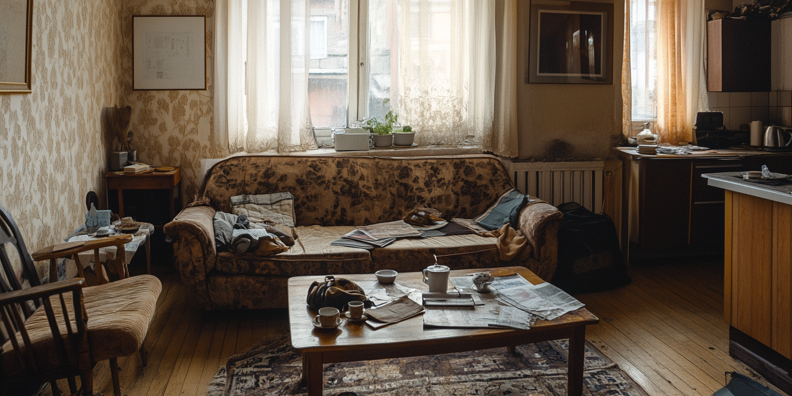

Převezmeme případ problémového nájemníka od první výzvy až po předání klíčů. Osmnáct starostí, které dnes řešíte vy, přejde na nás.
Teprve se chystáte pronajímat? Prověřte si zájemce zdarma.
Novela občanského soudního řádu zavedla rozkaz k vyklizení: zkrácené řízení bez jednání, obdoba platebního rozkazu. Byt se dá získat zpět v řádu měsíců místo let. Má to ale tři lhůty, které se dají propásnout.
Nájemník ve vašem bytě celou tu dobu bydlí a vy platíte hypotéku ze svého.
Zkrácené řízení bez jednání. Ale jen když jsou papíry v pořádku a lhůty se nepropásnou.
Délka pruhů odpovídá skutečnému poměru měsíců. Rozdíl mezi oběma cestami je řádově rok života.
Po skončení nájmu musíte nájemníka písemně vyzvat k vyklizení. Když to nestihnete, nájem se obnovuje a začínáte znovu.
Výzva musí být doručena nejméně 14 dní před podáním návrhu k soudu, do bytu nebo do datové schránky.
Tolik má nájemník na odpor. Podaný odpor rozkaz ruší, proto musí být návrh neprůstřelný od prvního dne.
Anonymizovaný dokument na stole, seshora, denní světlo. Jména začerni, ale nech čitelnou hlavičku soudu, datum a razítko. Vedle obálka s dodejkou. Žádná stocková fotka kladívka.
Proč to prodává: většina majitelů rozkaz nikdy neviděla a neví, jestli existuje. Fotka reálného dokumentu z konkrétního případu z abstraktního slibu udělá hmatatelnou věc.
Šest otázek. Na konci uvidíte svou situaci, lhůty, které vám běží, odhad délky řešení a konkrétní krok, který musíte udělat do 72 hodin.
Bez střihu a bez hudby. Sedíš u stolu, za tebou kancelář. Zhruba: „Pokud vám nájemník neplatí nebo se odmítá vystěhovat, tady je jediná věc, kterou musíte udělat tenhle týden.“ Pak řekneš tříměsíční lhůtu a skončíš tím, že diagnostika je zdarma.
Proč to prodává: člověk v krizi kupuje člověka, ne službu. Je to jediné místo, kde uvidí, komu bude volat.
Pošleme vám ho i s rozpočtem a ozveme se do 180 minut. Zdarma, i když se nakonec rozhodnete jinak.
Žádné automatické hovory. Ozve se člověk, který případ povede.
Výstup je orientační a nenahrazuje právní poradenství. Právní úkony a zastoupení u soudu zajišťuje spolupracující advokátní kancelář.
Orientační průběh případu, který se neřeší. Počítáno pro byt s nájemným 18 000 Kč měsíčně.
Dvě fotky vedle sebe ze stejného úhlu: stav při předání a stav při vyklizení. Nepotřebuješ zdemolovaný byt, naopak. Nejsilnější je běžný neuklizený byt s plesnivým rohem a hromadou věcí, protože v tom se majitel pozná.
Proč to prodává: čísla nad tím jsou abstrakce. Fotka je moment, kdy si člověk představí svůj byt a spočítá, že rekonstrukce bude dražší než cokoli, co mu nabídneš.
Proti tomu poměřujte cenu jakéhokoli řešení. Nejdražší varianta je vždycky ta, kde se čeká.
Vlevo je váš dnešek, vpravo den po podpisu. Projděte si to a spočítejte, kolik z levé strany jste dělal za poslední měsíc.
Nebudeme tvrdit, že nic. Jsou tři věci, které za vás udělat nemůžeme. Jinou práci od vás nechceme.
Smlouvu, výpisy plateb a komunikaci s nájemníkem. Jednou, na začátku.
Bez ní za vás nemůžeme jednat. Připravíme ji a vysvětlíme, co přesně pokrývá.
Jestli přijmout případnou dohodu a jestli si byt necháte, nebo ho prodáte.
Od první výzvy až po předání vyklizeného bytu. Tohle všechno je v ceně.
Rozbor smlouvy, plateb a komunikace. Časová osa a rozpočet do tří pracovních dnů, žádné účtování po hodinách.
Výzva, výpověď, doklady o doručení, protokoly a fotodokumentace. První listina odchází do 24 hodin od podpisu podkladů.
Telefonáty, e-maily i osobní jednání vedeme my. Vy se s ním nemusíte vidět ani slyšet.
Podání ve spolupráci s advokátní kanceláří včetně reakce na odpor. Exekutor, stěhování, výměna zámků, převzetí bytu.
Dlužné nájemné, škody a náklady sečteme a uplatníme. Nezůstane to jen u vyklizení.
Seshora rozložené papíry: smlouva, výzva, výpověď, dodejky, protokol, fotodokumentace, návrh k soudu. Klidně dvacet listů přes celý stůl. Anonymizuj jména, ale ať je vidět objem.
Proč to prodává: vizuální ospravedlnění ceny. Dokud vidí jen odrážky, cena zní vysoko. Když uvidí, kolik papírů by musel obstarat sám, zní levně.
Aktivační poplatek. Odečítá se od konečné odměny, takže při úspěchu nezaplatíte navíc ani korunu. Když případ nedopadne, vracíme ho celý.
Konkrétní částku uvidíte v písemném plánu dřív, než cokoli podepíšete.
Bereme 6 nových případů měsíčně.
Bodový model, který používáme u vlastních klientů. Zadáte, co o zájemci víte, a dostanete skóre od 0 do 100, seznam rizikových faktorů a konkrétní pojistky do smlouvy právě u tohohle člověka.
Většina případů, které řešíme, se dala zastavit tady. Ne u soudu, ale u stolu před podpisem.
Spustit prescoring zdarmaSnímek výsledku s velkým skóre, pásmem a rozpadem rizik. Ideálně případ, který dopadl špatně. Vyfoť to i na mobilu v ruce, většina lidí to otevře v telefonu.
Proč to prodává: nikdo neklikne na nástroj, o kterém neví, jak vypadá. Náhled výstupu zvedne prokliky a ukáže, že to není další formulář na sběr e-mailů.
Tři případy z poslední doby. Jména a adresy neuvádíme, čísla ano.
Natoč skutečného majitele, ideálně v tom bytě, o který šlo. Neptej se, jestli je spokojený. Zeptej se na tři věci: jak dlouho to řešil sám, co ho to stálo, a v jakém okamžiku si řekl, že to sám nezvládne. Titulky povinně, většina to pustí bez zvuku.
Proč to prodává: jediná věc na stránce, kterou o vás neříkáte vy. Kdyby měl vzniknout jen jeden materiál z celého seznamu, ať je to tenhle.
Byt po vyklizení, uklizený a připravený k pronájmu. Vedle poběží čísla: doba řešení, dlužná částka, kolik se vrátilo.
Předání klíčů, detail ruky s klíči nad předávacím protokolem. Datum nech čitelné, jména začerni.
Podpis kupní smlouvy nebo dva lidi u stolu při jednání. Nemá to vypadat jako bankovní reklama, klidně mobilem.
Než budou fotky a čísla z reálných případů, tuhle sekci nepouštěj ven. Vymyšlená případovka je jediná věc, která tenhle typ webu spolehlivě zabije.
David, pas nahoru, neutrální pozadí, denní světlo. Ne oblek s kravatou, ale ani tričko. Pohled do objektivu.
Případ vede jeden konkrétní člověk od prvního hovoru až po předání klíčů. Nebudete pokaždé vysvětlovat všechno znovu někomu jinému.
Sepis podání, právní úkony a zastoupení u soudu zajišťuje spolupracující advokátní kancelář. Naší rolí je vedení případu, dokumentace, komunikace s nájemníkem a koordinace celého procesu.
Portrét advokáta se jménem a číslem zápisu v ČAK, nebo aspoň logo kanceláře. Nejlepší je společná fotka vás dvou v kanceláři.
Proč to prodává: „spolupracující advokátní kancelář" bez jména zní jako výmluva. Konkrétní jméno je zároveň splnění zákonné povinnosti i odpověď na námitku „proč vy a ne rovnou právník".
Informace na této stránce jsou orientační a nenahrazují právní poradenství. Konkrétní kroky ve vašem případě konzultujeme s advokátem.
Diagnostika trvá dvě minuty a je zdarma. Když z toho nic nebude, aspoň budete vědět, na čem jste.